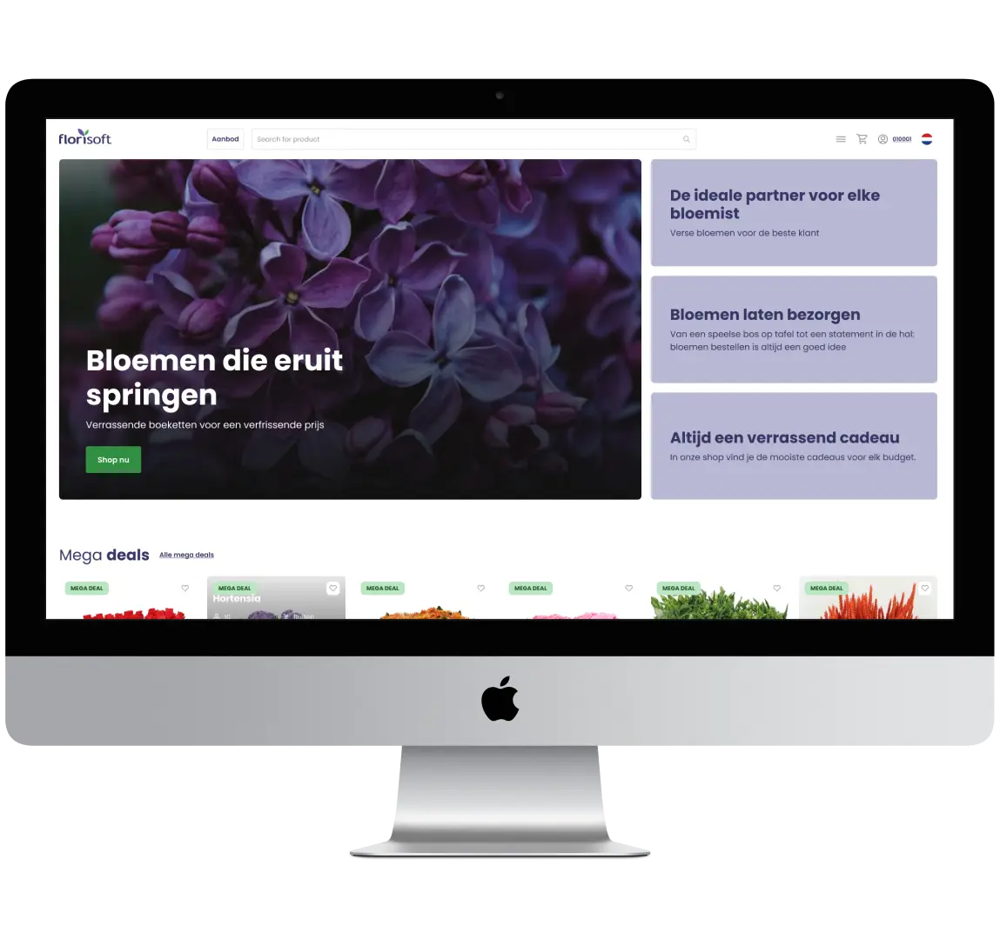
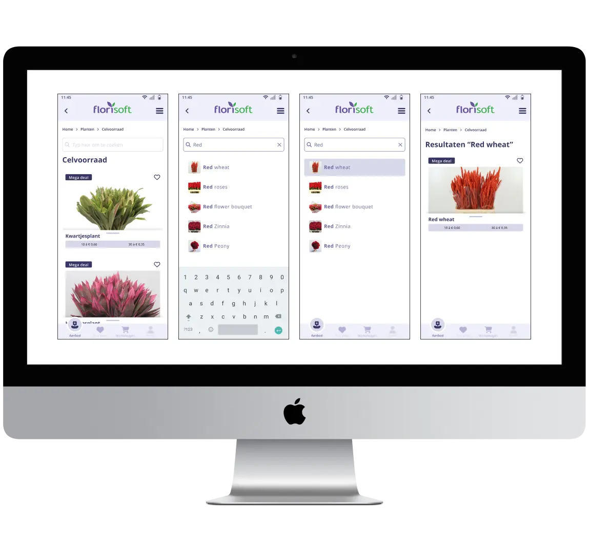
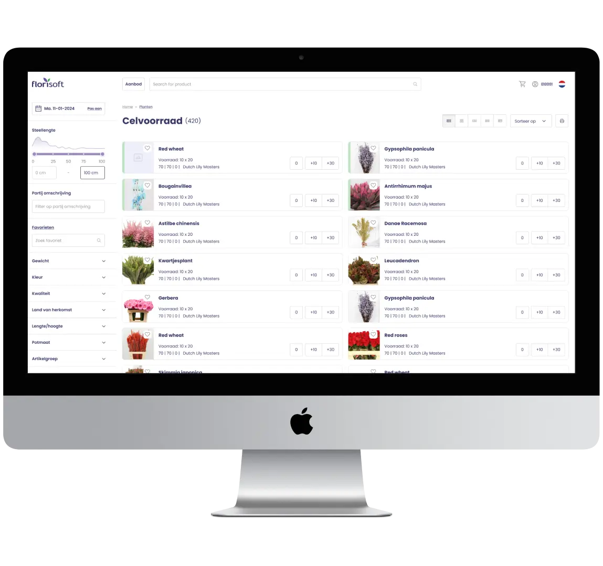
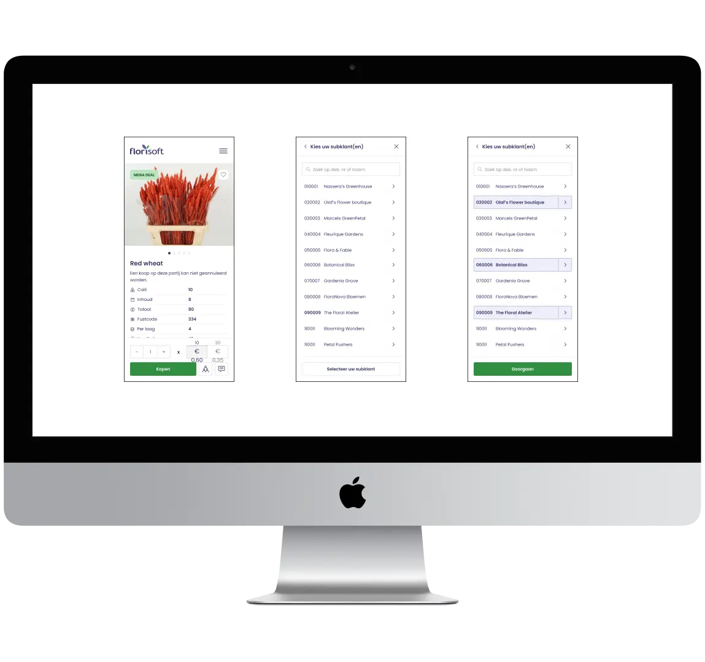
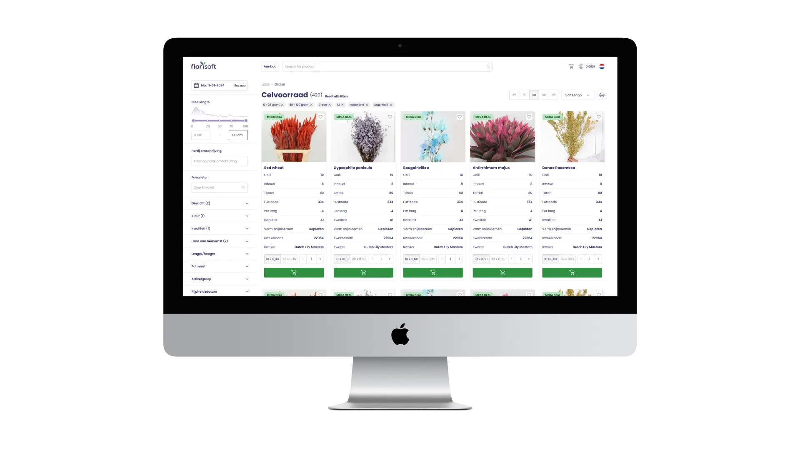

Florisoft
Een professioneel UX/UI-project waarin ik verschillende onderdelen van het platform heb uitgewerkt, van wireframes en structuur tot de uiteindelijke visuele ontwerpen voor desktop en mobiel.

Florisoft
Bij Florisoft heb ik meegewerkt aan het verbeteren en vernieuwen voo verschillende onderdelen van de gebruikerservaring en interface binnen de Florishop. Hierbij heb ik wireframes en visuele ontwerpen gemaakt voor zowel desktop als mobiele schermformaten. Daarnaast heb ik meegewerkt aan het design system om de verschillende componenten en visuele elementen consistent en herkenbaar binnen het platform toe te passen.
UX / UI Design
Ik heb wireframes en visuele ontwerpen uitgewerkt voor verschillende onderdelen van het platform, van de eerste structuur tot de uiteindelijke interface. Hierbij heb ik verschillende gebruikersflows en schermformaten uitgewerkt en rekening gehouden met de verschillen tussen desktop en mobiel, zodat de gebruikerservaring op beide platformen consistent en overzichtelijk blijft.
Desktop & Mobile
De ontwerpen zijn uitgewerkt voor verschillende schermformaten, waarbij ik rekening heb gehouden met de manier waarop gebruikers de interface op desktop en mobiel ervaren. Door de layouts en componenten hierop af te stemmen, blijft de visuele stijl consistent en behoudt de interface op verschillende apparaten een duidelijke en gebruiksvriendelijke structuur.
Project Scope
Binnen het project heb ik gewerkt aan verschillende onderdelen van de website en gebruikerservaring. Hierbij heb ik onder andere navigatie, zoekresultaten, filters, favorieten, detailpagina’s en de winkelwagen uitgewerkt voor zowel desktop als mobiel.
Login Schermen
Homepage
Page Header & Footer
Vertrekdatum
Filteropties
Galerij
Favorieten
Zoekresultaten
Detailpagina
Winkelwagen
My Account
404 Pagina
Wireframes
Het uitwerken van verschillende wireframes voor desktop en mobiel om de structuur, navigatie en indeling van de verschillende schermen te bepalen. Door verschillende schermopbouwen en gebruikersflows uit te werken, heb ik onderzocht hoe de belangrijkste onderdelen van de website logisch en overzichtelijk binnen de interface konden worden geplaatst.

UI Design
Het vertalen van de wireframes naar visuele interfaces voor desktop en mobiel, waarbij structuur, visuele hiërarchie en gebruiksvriendelijkheid centraal staan. Hierbij heb ik de verschillende schermen verder uitgewerkt en voorzien van een consistente visuele stijl die aansluit op de verschillende onderdelen van het platform.


Oplevering
Naast het ontwerpen van de verschillende schermen heb ik meegeschreven aan de documentatie rondom de oplevering. Hierbij heb ik de verschillende onderdelen, functionaliteiten en ontwerpkeuzes van het project beschreven en overzichtelijk vastgelegd wat er gerealiseerd en opgeleverd moest worden. Zo vormde de documentatie een duidelijke basis voor de verdere uitwerking en overdracht van het project.

Final Result
Het uiteindelijke resultaat is een uitgebreide UX/UI-uitwerking van Florishop, waarin verschillende gebruikersflows, schermen en functionaliteiten samenkomen in één consistente digitale ervaring. De interface is uitgewerkt voor zowel desktop als mobiel, waarbij aandacht is besteed aan een duidelijke structuur, visuele samenhang en gebruiksvriendelijkheid.